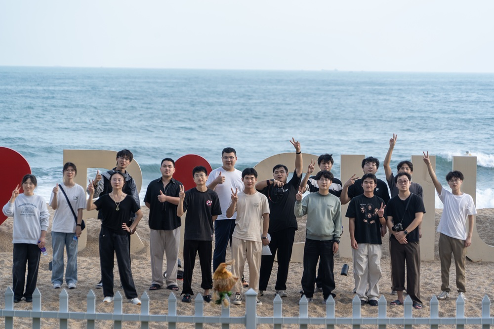

Dr. Wei Chen / 陈威 博士
Associate Professor (tenured) / 长聘副教授
College of Engineering Physics / 工程物理学院
Shenzhen Technology University (SZTU) / 深圳技术大学
E-mail: chenwei@sztu.edu.cn
>>Group page on X-MOL (in Chinese)

[1] Smart Optoelectronic Integrated Systems (SOIS)
[2] Colloidal Quantum Dots based Detection and Imaging Techniques (QD-SWIR)
[3] Thinfilm Properties-Structure Correlations via Grazing-incidence X-ray scattering (GIXS: GISAXS, GIWAXS)
2025-10 Nano Res.[器件]│深圳技术大学陈威课题组：自组装单分子层改性空穴传输层提升PbS量子点短波红外光电探测器性能
2025-06 ACS Photonics/ 深技大科研课题组在量子点探测及成像技术领域取得关键进展
2025-04 Nature Energy/ 量子点墨水工程助力突破大面积光伏组件效率与成本瓶颈
2024-05 Advanced Functional Materials/ 通过有序排列的钙钛矿异质域实现定向载流子管理

Dr. Wei Chen is a tenured Associate Professor at Shenzhen Technology University (SZTU). He leads the Energy & Photonics Lab (EPL) and Lab for Smart Optoelectronic Integration Systems(SOIS). He holds a B.Sc. in Physics from Hubei Engineering University, an M.Sc. in Materials Science from Hubei University, and a Ph.D. (Dr.rer.nat.) from the Technical University of Munich (TUM), Germany.
Dr. Chen's research focuses on solution-processed semiconductor thin films, including colloidal quantum dots (CQDs), perovskites, and organic semiconductors, and the smart optoelectronic integration systems. His work combines material sience and device physics and smart integrated systems. He has developed extensive collaborations across academia and industry to promote the development of next-generation optoelectronic devices and application systems.
Before joining SZTU in 2022, Dr. Chen conducted research at the Southern University of Science and Technology (SUSTech), where he worked on CQD-based optoelectronic applications. In recognition of his contributions, he was promoted to Associate Professor in 2024.
At SZTU, Dr. Chen teaches undergraduate courses in solid-state physics and semiconductor physics. He actively mentors students and welcomes those interested in materials science and photonic technologies to engage with the EPL and SOI lab.

[2025/11] The group went hiking at Shuangyue Bay in Huizhou and took a group photo.
[2025/11] Group members attended the safety training for this semester at C5-106.
[2025/10] Wei hosted the International Seminar for Advanced Nano-Functional Materials at Shenzhen Technology University.